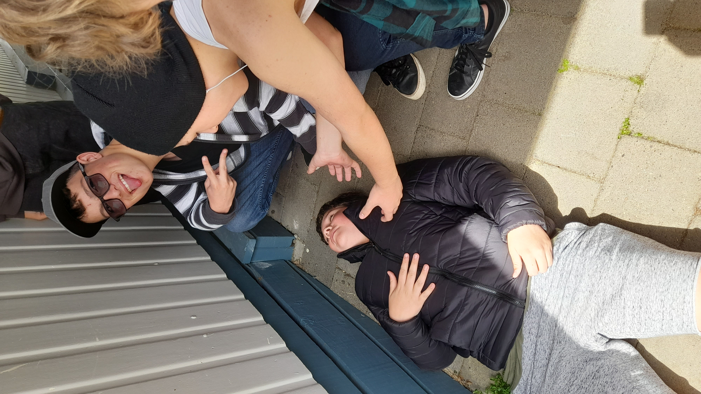

I have a good friend group here at St John's but the only reason I added this page is because my friend Boyd insisted on being included in my website.
I met Boyd Joseph Maber at St Pat's when we were 5 years old, we've been friends ever since. He's can be a bit dumb and a bit annoying, but so can I so it balances out. He goes to St John's aswell, here are some photos of him:
BACK 2 Home--> 